CLASS
Classes play a strict role within the Shadawi Universe, you can think of this as the ranking or
hierarchy between specimens. In some rare cases, Shadawi may unite with their lower-class members
and become a product of both classes. Each class deals +15% more damage to the lower class member.
Devine: a specimen that looks heavenly or otherworldly.
Gas: A being of a fume-type texture.
Humanoid: A being that can stand upright, and walk on legs.
Beast: a specimen that is animal-like in nature.

ABILITY
There are 3 different types of abilities a conditional, alter, and
strike. A specimen can have all three of these abilities or just one,
but never will a specimen have no ability.
Conditional: if a certain condition is true within that battle. Specimen will activate an alter,
which can change stats or gameplay.
Alter: an alter is a type of ability that can change enemy or player stats, or gameplay.
Strike: is the basic attack that will activate every “attack time”. Also a strike usually
comes with modifiers that may alter these battle stats: atk, def, tme, stn, ago, pow.

BUILDS
There are 4 different kinds of Shadawi.
BASE:
base-type specimen, are the Shadawi standard specimen. Base specimen usually carry only 1
form However periodically we may add or remove skins to it's base form.
COLORS:
Color-type specimen are a distinct force in the shadawi universe, each form is a different
variant of that specimen. These specimen only have 1 skin per form, however they may have
different characteristics & abilities from their other variants, unlike base.
EVO:
an Evo-type specimen can evolve over time. A specimen's evolution time depends on its species.
The longest recorded time for a specimen to achieve its final form is 3 years, but you can
speed up the process by feeding it gems. The higher the Purg level the more powerful the
gems are.
FUSION:
a fusion type specimen is a uniqe specimen that requires each form to be fused to create the final specimen.
Each form within a fusion type is called a "component". In the fusion process, the owner needs to have all
components of that specimen/SID to complete the fuse. No gems are required.
PURG LVL
Weak 1/148
Resistant 1/198
Strong 1/445
Mighty 1/1240
SuperMighty 1/4395
Unpurgable
The purg level determines the rarity of the specimen. Specimen with a higher
purg level tend to be more dangerous, or skill full. in either situation a specimen with
"mighty" purg level will always be harder to obtain than a "weak"
BATTLE STATS
Battle stats are not held on the blockchain, and can only be altered within a battle. After
a battle the stats go back to normal.
Health: life points
Damage: the damage that will be dealt per strike
Defence: the defense only activates after specimen has finished striking.
Keep in mind Specimen with lower attack times will have less time to block.
Time: time it takes to preform another strike. Also known as a cycle
Stun: chance of a strike that leaves the enemy unable to strike back for 1 cycles.
Agility: chance of avoiding an enemies strike.
Power: chance of landing a critical hit adding 80% more damage
FAMILY
is the family/kingdom that the monster belongs to there are many different families that
exist in the Shadawi universe and new ones are being discovered.
TRAIT
The trait is the source of power that the specimen is known to use in its abilities.
Shaolin: fighting type
Samurai: wielding a sword
Cursed: effects player & enemy
Sorcerer: uses a rare universal power. cosmic, akashic, waters, 7 winds.
Mystical: has a rare internal power that can only be used by that specimen or family.
POPULATION
The population is the finite count of that species, once the population is minted, no more can
be minted. Players will have to find them on other Markets to see if another player is selling them.